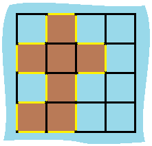

463. 岛屿的周长
每块陆地自带 4 条边，每有一对相邻陆地就扣 2（共享边两侧各少 1）；只看上、左邻居避免重复扣。
思路
- 周长 = 所有「陆地格与非陆地（水或出界）相邻的边」的总数。
- 计数式：
ans = 4 × 陆地格数 − 2 × 相邻陆地对数；实现时扫到陆地格先+4，再看上、左两个方向是不是陆地，是就-2。 - 只检查上、左两个方向：每对相邻陆地恰好被扫到一次（右/下邻居会在处理它自己时扣），不重不漏。
- 不用 DFS：和面积不同，周长是逐格的局部量，一遍扫描即可。
图解
最优解
1class Solution {2 public int islandPerimeter(int[][] grid) {3 int ans = 0;4 for (int i = 0; i < grid.length; i++) {5 for (int j = 0; j < grid[0].length; j++) {6 if (grid[i][j] != 1) continue;7 ans += 4; // 每块陆地自带 4 条边8 // 上、左邻居是陆地就说明共享了一条边：两边各少 1，共扣 29 if (i > 0 && grid[i - 1][j] == 1) ans -= 2;10 if (j > 0 && grid[i][j - 1] == 1) ans -= 2;11 }12 }13 return ans;14 }15}题目
给定一个 row x col 的二维网格地图 grid ，其中：grid[i][j] = 1 表示陆地， grid[i][j] = 0 表示水域。
网格中的格子 水平和垂直 方向相连（对角线方向不相连）。整个网格被水完全包围，但其中恰好有一个岛屿（或者说，一个或多个表示陆地的格子相连组成的岛屿）。
岛屿中没有“湖”（“湖” 指水域在岛屿内部且不和岛屿周围的水相连）。格子是边长为 1 的正方形。网格为长方形，且宽度和高度均不超过 100 。计算这个岛屿的周长。
示例 1：

输入：grid = [[0,1,0,0],[1,1,1,0],[0,1,0,0],[1,1,0,0]] 输出：16 解释：它的周长是上面图片中的 16 个黄色的边
示例 2：
输入：grid = [[1]] 输出：4
示例 3：
输入：grid = [[1,0]] 输出：4
提示：
row == grid.lengthcol == grid[i].length1 <= row, col <= 100grid[i][j]为0或1
题面取自力扣当前版本。
数据快照 2026-11-04。题面版权归力扣所有，本站点仅供本人学习使用，请勿对外发布。